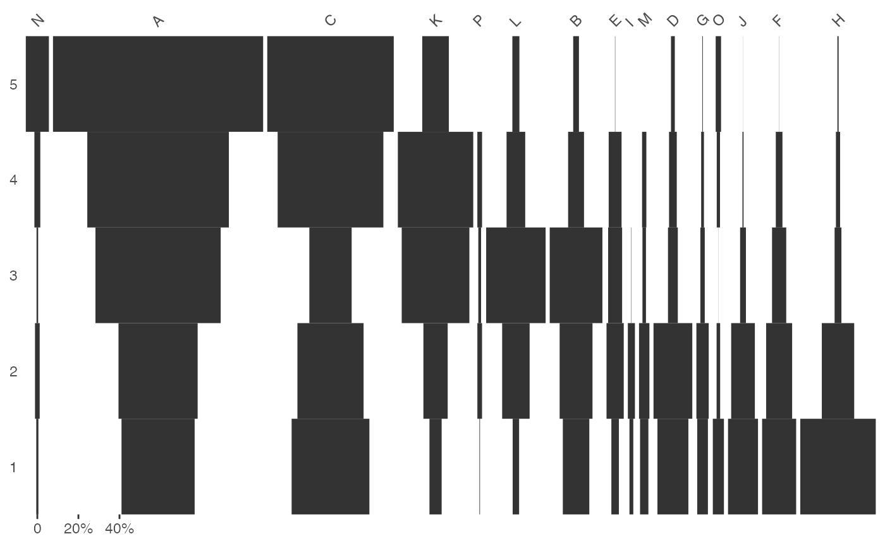

seriate_* computes a permutation order for rows and/or columns.
permute rearranges a data matrix according to a permutation order.
seriate_reciprocal(object, ...) seriate_correspondance(object, subset, ...) seriate_idds(object, ...) permute(object, order, ...) # S4 method for CountMatrix seriate_reciprocal(object, EPPM = FALSE, margin = c(1, 2), stop = 100) # S4 method for IncidenceMatrix seriate_reciprocal(object, margin = c(1, 2), stop = 100) # S4 method for CountMatrix,missing seriate_correspondance(object, margin = c(1, 2), ...) # S4 method for IncidenceMatrix,missing seriate_correspondance(object, margin = c(1, 2), ...) # S4 method for CountMatrix,BootCA seriate_correspondance(object, subset, margin = c(1, 2), ...) # S4 method for CountMatrix,PermutationOrder permute(object, order) # S4 method for IncidenceMatrix,PermutationOrder permute(object, order)
| object | An \(m \times p\) data matrix. |
|---|---|
| ... | Further arguments to be passed to internal methods. |
| subset | A BootCA object giving the subset of
|
| order | A PermutationOrder object giving the permutation order for rows and columns. |
| EPPM | A |
| margin | A |
| stop | A length-one |
seriate_* returns a PermutationOrder object.
permute returns either a CountMatrix or an
IncidenceMatrix (the same as object).
The matrix seriation problem in archaeology is based on three conditions and two assumptions, which Dunell (1970) summarizes as follows.
The homogeneity conditions state that all the groups included in a seriation must:
Be of comparable duration.
Belong to the same cultural tradition.
Come from the same local area.
The mathematical assumptions state that the distribution of any historical or temporal class:
Is continuous through time.
Exhibits the form of a unimodal curve.
Theses assumptions create a distributional model and ordering is accomplished by arranging the matrix so that the class distributions approximate the required pattern. The resulting order is infered to be chronological.
The following seriation methods are available:
Correspondance analysis-based seriation. Correspondance analysis (CA) is an effective method for the seriation of archaeological assemblages. The order of the rows and columns is given by the coordinates along one dimension of the CA space, assumed to account for temporal variation. The direction of temporal change within the correspondance analysis space is arbitrary: additional information is needed to determine the actual order in time.
Reciprocal ranking (incidence data) or averaging (frequency data) seriation. These procedures iteratively rearrange rows and/or columns according to their weighted rank in the data matrix until convergence. Note that this procedure could enter into an infinite loop. If no convergence is reached before the maximum number of iterations, it stops with a warning.
Desachy, B. (2004). Le sériographe EPPM: un outil informatisé de sériation graphique pour tableaux de comptages. Revue archéologique de Picardie, 3(1), 39-56. DOI: 10.3406/pica.2004.2396.
Dunnell, R. C. (1970). Seriation Method and Its Evaluation. American Antiquity, 35(03), 305-319. DOI: 10.2307/278341.
Ihm, P. (2005). A Contribution to the History of Seriation in Archaeology. In C. Weihs & W. Gaul (Eds.), Classification: The Ubiquitous Challenge. Berlin Heidelberg: Springer, p. 307-316. DOI: 10.1007/3-540-28084-7_34.
# Matrix seriation # Reproduces Desachy 2004 results ## Coerce dataset to abundance matrix compiegne_count <- as(compiegne, "CountMatrix") ## Get seriation order for columns on EPPM using the reciprocal averaging method ## Expected column order: N, A, C, K, P, L, B, E, I, M, D, G, O, J, F, H (compiegne_indices <- seriate_reciprocal(compiegne_count, EPPM = TRUE, margin = 2))#> Permutation order for matrix seriation: #> Matrix ID: ee6a9697-2fb1-4957-9e3d-ab271876fd49 #> Row order: 1 2 3 4 5 #> Column order: 14 1 3 11 16 12 2 5 9 13 4 7 15 10 6 8 #> Method: reciprocal## Permute columns compiegne_new <- permute(compiegne_count, compiegne_indices) ## Plot new matrix plot_ford(compiegne_new, EPPM = FALSE)# \donttest{ # Refine matrix seriation (this is a long running example) # Reproduces Peeples and Schachner 2012 results zuni_count <- as(zuni, "CountMatrix") ## Samples with convex hull maximum dimension length greater than the cutoff ## value will be marked for removal. ## Define cutoff as one standard deviation above the mean fun <- function(x) { mean(x) + sd(x) } ## Get indices of samples to be kept ## Warning: this may take a few seconds! set.seed(123) (zuni_refined <- refine(zuni_count, cutoff = fun))#> Partial bootstrap CA seriation refinement: #> - Cutoff values: 2.22 (rows) - 0.37 (columns) #> - Rows to keep: 349 of 420 (83%) #> - Columns to keep: 14 of 18 (78%)## Get CA-based seriation order (zuni_indices <- seriate_correspondance(zuni_count, zuni_refined, margin = 1))#> Permutation order for matrix seriation: #> Matrix ID: f3858c0c-fdaa-4490-a192-f39c6109c273 #> Row order: 372 350 387 367 110 417 364 357 407 160 373 406 356 344 348 384 378 362 339 383... (400 more) #> Column order: 1 2 3 4 5 6 7 8 9 10 11 12 13 14 15 16 17 18 #> Method: refined correspondance# }